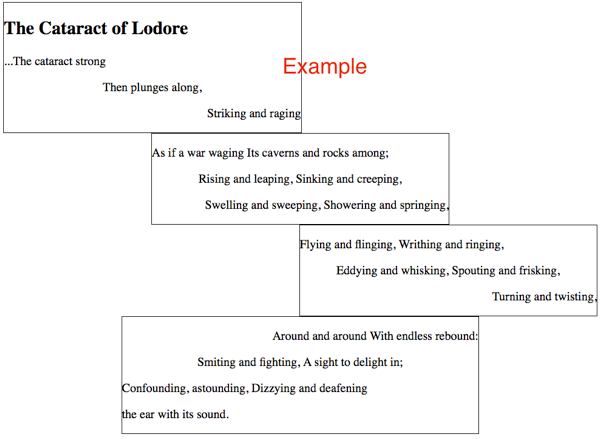

In this activity, we will take another look at positioning and layout
with CSS. Both with Grid and without.
Activity Instructions
Grid Practice
Visit
CSS Grid Garden
and complete all 28 levels. It will probably be helpful to have
the
Complete Guide to CSS
Grid
open in another window for reference. Take a screenshot of the
final screen when you are done. This will be one of the two images you will submit to Ilearn.
Other ways to align
Earlier in the semester, you were introduced to the concept of
block and inline elements. Blocks flow
vertically down the page by default, and inline flows horizontally
across. You were also shown how to align both inline and block
elements. Let's review that again now.
For this part of the activity, your mind might jump to Grid as a
way to solve this. You could actually do it with Grid, but in
this case, we want to try something different. You will
not need a Grid for this part.
Since we are not using Grid, the alignment properties we studied
above (justify-items, justify-content, align-items, and
align-content) will not work. They only work
inside of a Grid!
Block elements first: block elements take up 100% of the width
available to them. So, if we want to align them, we first have to
set a width of less than 100% on them. Then we can set the left
and/or right margin to auto. For center, we would set
both left and right to auto (margin: 0 auto;). For right-aligned blocks, we
would set
just the left
margin to auto (margin-left: auto;). Blocks are left
aligned by default, so we don't have to do anything for that!
Take a look at the following screenshot to see what we are trying
to do.

Poem alignment example
The alignment of the poem can be described like this:
Block 1 should be left-aligned
Block 2 should be center-aligned
Block 3 should be right-aligned
Block 4 should be center-aligned
The first paragraph in blocks 1,2,3 should be left-aligned.
The second paragraph in blocks 1,2,3 should be center-aligned.
The third paragraph in blocks 1,2,3 should be right-aligned.
The first paragraph in block 4 should be right-aligned.
The second paragraph in block 4 should be center-aligned.
The third and fourth paragraphs in block 4 should be left
-aligned.
All of our blocks are made of
<section> elements. Remember that if we want to
align a block element (sections are block elements), we need to set
a width, then adjust the margins. Set a width of 50% on
all of the <section> elements.
Then set the alignment of each block by adjusting the
margins appropriately.
Next, we need to align the paragraphs. We can use the
text-align property to align the text inside the
paragraphs. We set the text-align property on a block
like a p or h1 for example, and it will
affect everything inside of that block.
We could add a class to each paragraph and change them
that way...but that is a lot of extra typing, and there is another
way. We can take advantage of complex selectors. Specifically, the
:nth-of-type()
pseudo-selector.
:nth-of-type() counts the number of times a
particular element is the child of another element. Here is an
example with paragraphs:
p:nth-of-type(1) { /* first paragraph */}
p:nth-of-type(2) { /* second paragraph */}
p:nth-of-type(3) { /* third paragraph */}
Using those selectors, write the CSS that will format the text
according to the requirements above. Note that block4 is formatted
differently than the others. For those paragraphs, we will need to
be more specific. Target just paragraphs that are in the
.block4 element.
We can use the
descendant selector
to do this. (<-- If you don't remember what that is, check out
the link.)
Once you get your alignments all right...take a screenshot of the
poem and submit it to ILearn. This will be the second of two images you submit.
Note that you may need to adjust the width of your browser
window once you are done to get yours to look just like
mine.